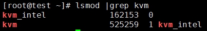

安装基础软件包
安装虚拟机化相关软件
在制作镜像的的时候，我们将要在节点A上嵌套地启动一个虚拟机。
- 使用如下命令确认节点A的 CPU 是否支持 KVM 虚拟化
# egrep -c "(vmx|svm)" /proc/cpuinfo
输出 0 表示不支持，非0 为支持。
- 确认kvm 模块已加载
# lsmod | grep kvm # 查看是否加载kvm内核模块

- 确认节点A上libvirtd 进程处于运行状态。
安装Oz 工具及依赖包
# yum install epel-release
# yum makecache
# yum install oz
OZ安装完后:
- kickstart文件所在目录: /usr/lib/python2.7/site-packages/oz/auto
- tdl文件模板所在目录： /usr/share/doc/oz-0.15.0/examples
安装虚拟机机启动工具
# yum install qemu-system-x86 #安装此工具，稍后用于自验制作的镜像是否能启动